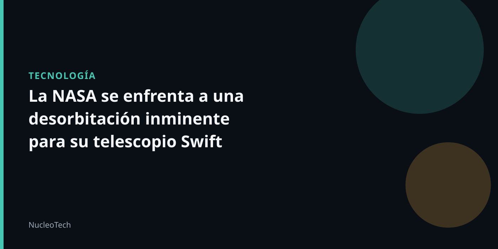

Un telescopio en apuros
El Observatorio Neil Gehrels Swift es un conjunto de telescopios espaciales que han estado en órbita desde 2004, proporcionando datos valiosos sobre la energía y la materia en el universo. Sin embargo, en los últimos meses, ha estado cayendo lentamente hacia una desorbitación inevitable.
La NASA ha lanzado una misión para devolver el telescopio a una órbita más estable, pero esta ha fracasado y ahora se enfrenta a la realidad de que solo tiene días contados antes de caer a la atmósfera.
Para intentar obtener la mayor cantidad de datos posibles, la NASA ha decidido encender de nuevo los instrumentos de Swift, aunque esto significa que la resistencia que estaba disminuyendo con el tiempo volverá a aumentar, acelerando aún más la desorbitación.
Se han encendido dos de los tres telescopios y se han empezado a recopilar datos, lo que ha permitido a la NASA obtener algunos resultados valiosos.
- El telescopio Swift ha sido fundamental para la investigación de la energía y la materia en el universo.
- La desorbitación del telescopio significa la pérdida de datos valiosos y la cancelación de futuras investigaciones.
- La NASA está haciendo todo lo posible para recopilar datos antes de que el telescopio caiga a la atmósfera.
Consecuencias de la desorbitación
La desorbitación del telescopio Swift tendría consecuencias significativas para la comunidad científica. La pérdida de datos valiosos y la cancelación de futuras investigaciones serían un gran golpe para la comunidad científica.
Además, la desorbitación del telescopio Swift también tendría un impacto en la capacidad de la NASA para realizar futuras misiones científicas. La experiencia y los datos obtenidos con Swift han sido fundamentales para la investigación de la energía y la materia en el universo.